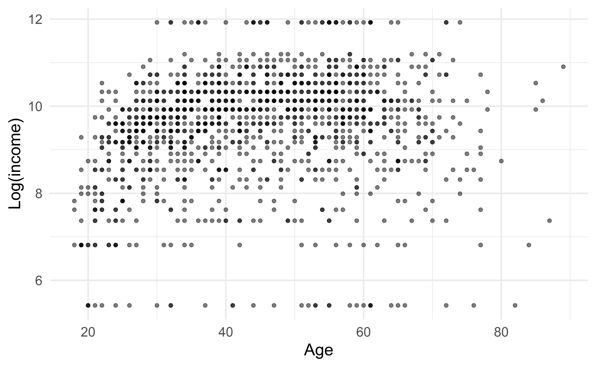
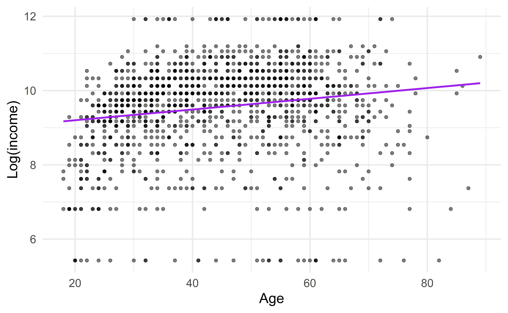
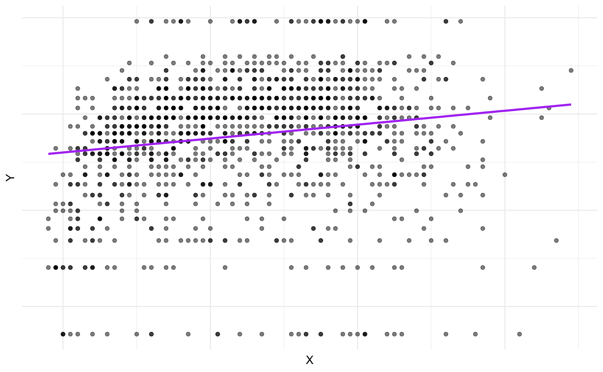
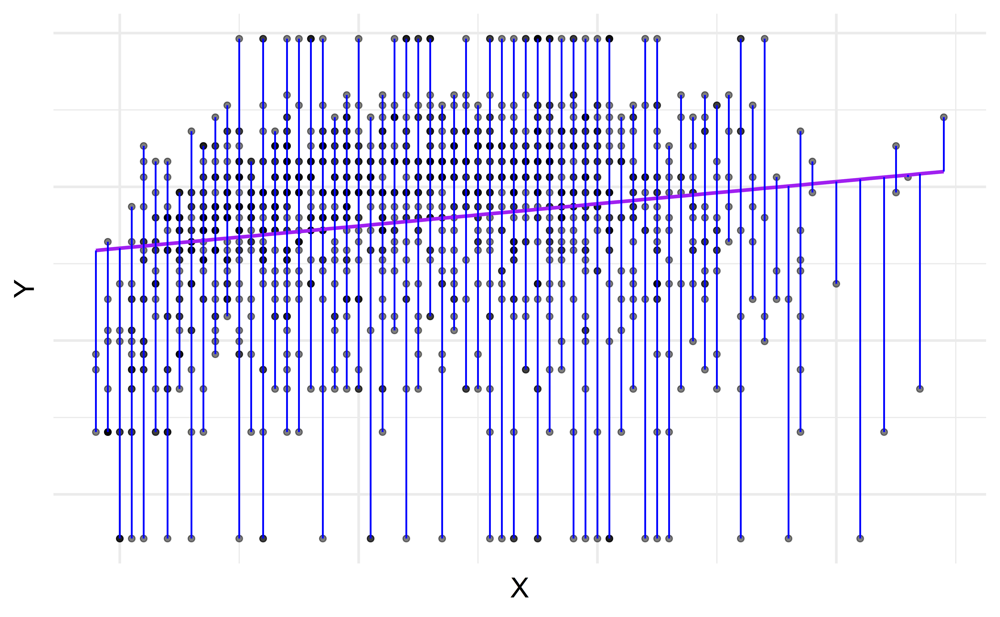
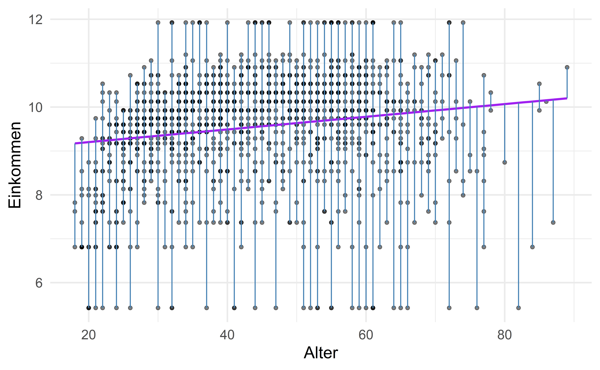

1. Seminar
Fortgeschrittene quantitative Methoden
Wintersemester 2024-2025
Daria Tisch
Wie arbeiten wir in diesem Kurs?
- Vormittags: Seminar
- Nachmittags: Übung (Datenanalyse in R)
- Kurswebsite
- Übersicht
- Interaktive Präsentationen
- Datensätze
- Fragen + Anregungen jederzeit erwünscht
Interaktive Folien
Interaktive Übungsaufgaben mit Lösungen
Bitte vervollständige den Code, sodass die Summe 10 ergibt.
Tipp: Rechne: 10-1-2-3
Themen heute
- Forschungsdesigns
- Datenquellen
- Datenauswertung
Pflichtlektüre: Hinz, T. (2018). Methoden der Arbeitsmarktforschung (S. 479-524). In: Abraham, M., Hinz, T. (eds) Arbeitsmarktsoziologie. Springer VS, Wiesbaden.
Forschungsdesign
Forschungsdesign
“eine systematische, transparente sowie dem jeweiligen Forschungsproblem angemessene Vorgehensweise, um zu einer belastbaren Antwort auf die Forschungsfrage zu gelangen” (S.480).
Forschungsfragen:
Beschreibend
Erklärend
Beispiele?
Forschungsdesign
- Beobachtungsdesign
- Datenerhebung (Messung), Dokumentation, Auswertung
- Explanandum (= zu erklärendes Phänomen) vom Forschungsprozess unabhängig
- Zusammenhänge werden im Zuge des Forschungsprozesses “entdeckt”
- Experimentaldesigns
- Manipulation: Forscherin greift in den zu erklärenden Prozess ein
- Experimentalgruppe erhält Treatment, Kontrollgruppe nicht
- Randomisierte Zuteilung
Beobachtungsdesign
- Längsschnitt
- Querschnitt
- Beispiele?
Kausalanalyse mit Beobachtungsdesign
- Explanandum: Gender wage gap
- Konstanthaltung durch Drittvariablenkontrolle
- Probleme:
- Endogenous selection bias
- Omitted variable bias
- Overcontrol bias
- Collider Bias
Experimentaldesign
- Forscherin setzt experimentellen Stimulus (=Treatment)
- Randomisierte Zuteilung des Treatments schließt Einfluss von Drittvariablen aus
- Einfach Auswertung: Mittelwertunterschiede
- Für Identifikation von Kausaleffekten ist Randomisierung notwendig, aber keine Zufallsstichprobe. Warum trotzdem sinnvoll?
Experimentaldesigns
- Laborexperimente
- Feldexperimente
- Umfrageexperimente
- Natürliche Experimente (exogene Ereignisse sorgen für faktische Randomisierung eines Treatments)
Datenquellen
Datenquellen
- Umfragedaten
- Prozessproduzierte Daten (aus administrativen Prozessen, die nicht zum Zweck der Forschung entstanden)
- Social Media
- Welche noch?
Umfragedaten
Zufallsstichprobe - Wofür?
- Verallgemeinerbarkeit
- Repräsentativität
- Inferenzstatistik
Umfragedaten: Beispiele
- Beispiele:
- SOEP
- Allbus
- Neps
- GESIS Panel
- Mikrozensus
Umfragedaten: Inhalte
- Einstellungen
- Biographien
- Einkommen und Vermögen
Umfragedaten mit experimentellen Teilen
- Factorial Survey Experimente
- Conjoint-Analysen
- Choice-Experimente
Prozessproduzierte Daten
= nicht für die sozialwissenschaftliche Analyse generierte Daten
- Administrative Daten: Sozialversicherungen, Steuerdaten
- Teilweise Verknüpfung mit Umfragedaten
- Fehlzeiten von Arbeitsnehmerinnen
- Internet Movie Base: Karriereinformationen
- Gerichtsakten
- Soziale Medien
- …
Datenauswertung
Datenauswertung
- Beschreibung von erkennbaren Mustern in den Daten
- Kausalschlüsse ziehen
Deskriptive Statistik
- Uni- und bivariate Statistik
- Verteilungen von 1 bzw. 2 Variablen
- Verteilungen werden durch Ausprägungen (=Antwortkategorien) gebildet
- Eigenschaften von Verteilungen durch statistische Maßzahlen
- Darstellung: Statistische Maßzahlen, Tabellen oder Diagramme
Los geht’s mit angewandter Regressionsanalyse
Computational setup
## Packages
pkgs <- c(
"stevedata",
"tidyverse",
"broom.helpers",
"ggplot2"
)
## Install uninstalled packages
lapply(pkgs[!(pkgs %in% installed.packages())], install.packages)list()[[1]]
[1] "stevedata" "stats" "graphics" "grDevices" "utils" "datasets"
[7] "methods" "base"
[[2]]
[1] "lubridate" "forcats" "stringr" "dplyr" "purrr" "readr"
[7] "tidyr" "tibble" "ggplot2" "tidyverse" "stevedata" "stats"
[13] "graphics" "grDevices" "utils" "datasets" "methods" "base"
[[3]]
[1] "broom.helpers" "lubridate" "forcats" "stringr"
[5] "dplyr" "purrr" "readr" "tidyr"
[9] "tibble" "ggplot2" "tidyverse" "stevedata"
[13] "stats" "graphics" "grDevices" "utils"
[17] "datasets" "methods" "base"
[[4]]
[1] "broom.helpers" "lubridate" "forcats" "stringr"
[5] "dplyr" "purrr" "readr" "tidyr"
[9] "tibble" "ggplot2" "tidyverse" "stevedata"
[13] "stats" "graphics" "grDevices" "utils"
[17] "datasets" "methods" "base" Daten
GSS
- General Social Survey (1974-2018)
- Nur Einkommensdaten und ein paar weitere Variablen
- Package: stevedata
Daten Einlesen und Überblick
- prestg10: respondent’s occupational prestige score
- realrinc: respondent’s base income (in constant 1986 USD)
df <- stevedata::gss_wages %>% filter(year==2018) %>%
filter(!is.na(age)) %>% filter(!is.na(realrinc))
glimpse(df)Rows: 1,358
Columns: 11
$ year <dbl> 2018, 2018, 2018, 2018, 2018, 2018, 2018, 2018, 2018, 2018,…
$ realrinc <dbl> 45400.0, 54480.0, 8512.5, 17025.0, 908.0, 45400.0, 54480.0,…
$ age <dbl> 42, 63, 59, 43, 62, 55, 59, 34, 44, 75, 55, 40, 34, 40, 37,…
$ occ10 <dbl> 1106, 3320, 3600, 5610, 4600, 6700, 10, 9120, 1720, 50, 325…
$ occrecode <chr> "Professional", "Professional", "Service", "Office and Admi…
$ prestg10 <dbl> 61, 59, 48, 35, 35, 39, 72, 35, 72, 53, 64, 64, 38, 64, 35,…
$ childs <dbl> 2, 2, 6, 0, 4, 2, 2, 3, 2, 4, 0, 2, 1, 1, 0, 3, 3, 0, 0, 5,…
$ wrkstat <chr> "Full-Time", "Full-Time", "Full-Time", "Full-Time", "Full-T…
$ gender <chr> "Male", "Female", "Female", "Male", "Female", "Male", "Male…
$ educcat <chr> "Bachelor", "Bachelor", "High School", "High School", "Less…
$ maritalcat <chr> "Married", "Married", "Divorced", "Never Married", "Widowed…Datenvisualisierung
Regressionsmodel
Fit a line
… um die Beziehung zwischen Alter und Einkommen zu beschreiben
Terminologie
- Outcome, Y: Variable, die das Merkmal von Interesse beinhaltet
- Predictor, X: Variable, die uns hilft, die Varianz des Outcomes zu verstehen
Regressionsmodel
Ein Regressionsmodel ist eine Funktion, die den Zusammenhang zwischen dem Outcome, \(Y\), und dem Prädiktor, \(X\), beschreibt.
\[\begin{aligned} Y &= \color{black}{\textbf{Model}} + \text{Error} \\[8pt] &= \color{black}{\mathbf{f(X)}} + \epsilon \\[8pt] &= \color{black}{\boldsymbol{\mu_{Y|X}}} + \epsilon \end{aligned}\]
Regressionsmodel
\[ \begin{aligned} Y &= \color{purple}{\textbf{Model}} + \text{Error} \\[8pt] &= \color{purple}{\mathbf{f(X)}} + \epsilon \\[8pt] &= \color{purple}{\boldsymbol{\mu_{Y|X}}} + \epsilon \end{aligned} \]

Regressionsmodel + Residuen
\[\begin{aligned} Y &= \color{purple}{\textbf{Model}} + \color{blue}{\textbf{Error}} \\[8pt] &= \color{purple}{\mathbf{f(X)}} + \color{blue}{\boldsymbol{\epsilon}} \\[8pt] &= \color{purple}{\boldsymbol{\mu_{Y|X}}} + \color{blue}{\boldsymbol{\epsilon}} \\[8pt] \end{aligned}\]

Einfache lineare Regression
Einfache lineare Regression
\[\Large{Y = \beta_0 + \beta_1 X + \epsilon}\]
- \(\beta_1\): Wahrer slope der Beziehung zwischen \(X\) und \(Y\)
- \(\beta_0\): Wahrer intercept der Beziehung zwischen \(X\) und \(Y\)
- \(\epsilon\): Error (Residuen)
Einfache lineare Regression
\[\Large{\hat{Y} = \hat{\beta}_0 + \hat{\beta}_1 X}\]
- \(\hat{\beta}_1\): Geschätzter slope
- \(\hat{\beta}_0\): Geschätzter intercept
- Kein Fehlerterm!
Residuen

ggplot(data = df, mapping = aes(x = age, y = log(realrinc))) +
geom_point(alpha = 0.5) +
geom_smooth(method = "lm", color = "purple", se = FALSE) +
geom_segment(aes(x = age, xend = age, y = log(realrinc), yend = predict(m)), color = "steel blue") +
labs(x = "Alter", y = "Einkommen") +
theme(legend.position = "none")
\[\text{Residuen} = \text{Beobachted} - \text{Vorhergesagt} = y - \hat{y}\]
Kleinstquadrate
- Residuum für die \(i^{te}\) Beobachtung
\[e_i = \text{beobachtet} - \text{vorhergesagt} = y_i - \hat{y}_i\]
- Die Summe der quadrierten Residuen ist
\[e^2_1 + e^2_2 + \dots + e^2_n\]
- Methode der kleinsten Quadrate minimiert die Summe der quadratischen Residuen
Interpretation
Interpretation
\[\widehat{\text{log(Einkommen)}} = 8.91 + 0.01 \times \text{Alter}\]
- Slope: Für jedes zusätzliche Jahr im Alter erwarten wir eine Vergrößerung des logarithmierten Wertes des Einkommens um 0.01 oder: Für jedes zusätzliche Jahr im Alter erwarten wir einen Einkommensanstieg von etwa 1.005% (\((e^{0.01} - 1) \times 100\))
Interpretation
Call:
lm(formula = log(realrinc) ~ age, data = df)
Coefficients:
(Intercept) age
8.91235 0.01444 \[\widehat{\text{log(Einkommen)}} = 8.91 + 0.01 \times \text{Alter}\]
- Intercept: Eine Person mit 0 Jahren hat ein durchschnittliches log. Einkommen von 8.91. Sinnvoll?
Vorhersagen machen
Jemand ist 28 Jahre alt. Wie hoch ist nach diesem Modell das Einkommen?
\[ \begin{aligned} \widehat{\text{log(income)}} &= 8.91 + 0.01 \times \text{age} \\ &= 8.91 + 0.01 \times 28 \\ &= 9.19 \end{aligned} \]
# Create a new data frame for age = 28
new_data <- data.frame(age = 28)
# Predict log(realrinc) for age = 28
predicted_log_income <- predict(m_income, newdata = new_data)
# Optionally reverse the log transformation
predicted_real_income <- exp(predicted_log_income)
# View results
predicted_log_income # log(realrinc) 1
9.316802 1
11123.35 OLS Regression: Annahmen
- Funktionaler linearer Zusammenhang der UV und AV (linear in parameters)
- AV ist metrisch
- Keine Multikollinearität der UVs
- Normalverteilung der Residuen
- Homoskedastizität der Residuen: \(\text{Var}(\epsilon|X) = \text{const}\).
- Residuen haben einen Mittelwert von 0: \(\text{E}(\varepsilon|X) = 0\).
- Strikte Exogenitätsannahme: \(\text{Cov}(\varepsilon|X) = 0\).
- Zufallsstichprobe (Inferenzstatistik)
- Keine Messfehler
Exkurs: Variablen und Skalenniveaus
- Verhältnis (Rangordnung, Abstände und Verhältnisse, absoluter Nullpunkt)
- Einkommen
- Alter
- Intervallskala (Rangordnung und Abstände)
- Grad Celsius
- Geburtsjahr
- Ordinales Skalenniveau (Rangordnung)
- Schulnoten
- Zufriedenheit
- Nominalskala (gleich/ungleich)
- Blutgruppe
- Familienname
Nun wird es noch praktischer
Regression
Bitte ermittle anhand einer Regression den durchschnittlichen Geschlechterspezifischen Lohnunterschied.
Lösung:z.B.
library("stevedata")
df <- stevedata::gss_wages %>% filter(year==2018) %>%
filter(!is.na(age)) %>% filter(!is.na(realrinc))
# Lineare Regression
model <- lm(realrinc ~ gender, data = df)
# Zusammenfassung der Regressionsergebnisse
summary(model)
# Ergebnisse übersichtlich darstellen
broom::tidy(model)
library("stevedata")
df <- stevedata::gss_wages %>% filter(year==2018) %>%
filter(!is.na(age)) %>% filter(!is.na(realrinc))
# Lineare Regression
model <- lm(realrinc ~ gender, data = df)
# Zusammenfassung der Regressionsergebnisse
summary(model)
# Ergebnisse übersichtlich darstellen
broom::tidy(model)Geschlechterunterschiede im Einkommen
Graphische Darstellung
Bitte stelle Geschlechterunterschiede im Einkommen Graphisch dar.
The gesuchte Variable lautet: gender
Lösung:
Ein Beispiel:
df <- stevedata::gss_wages %>% filter(year==2018) %>%
filter(!is.na(age)) %>% filter(!is.na(realrinc))
ggplot(df, aes(x = gender, y = realrinc, fill = gender)) +
geom_violin(trim = FALSE) +
labs(
title = "Geschlechterunterschiede beim Einkommen (2018)",
x = "Geschlecht",
y = "Reales Einkommen",
fill = "Geschlecht"
) +
theme_minimal()
df <- stevedata::gss_wages %>% filter(year==2018) %>%
filter(!is.na(age)) %>% filter(!is.na(realrinc))
ggplot(df, aes(x = gender, y = realrinc, fill = gender)) +
geom_violin(trim = FALSE) +
labs(
title = "Geschlechterunterschiede beim Einkommen (2018)",
x = "Geschlecht",
y = "Reales Einkommen",
fill = "Geschlecht"
) +
theme_minimal()Ende
- Dieser Foliensatz profitierte in großen Teilen von ehemaligen Veranstaltungen von Isabel Habicht sowie von:
- https://sta210-s22.github.io/website/slides/lec-2.html#/title-slide
- Weiterführende Informationen:
- Hinz, T. (2018). Methoden der Arbeitsmarktforschung (S. 479-524). In: Abraham, M., Hinz, T. (eds) Arbeitsmarktsoziologie. Springer VS, Wiesbaden.